System Walkthrough¶
In this section a walkthrough example of Smyrida Software will be described.
In order to run Smyrida which is a web application the user should open a web browser and type the address:
http://<server_ip>:3000
where <server_ip> is the ip of the server where Smyrida was installed.
The event log activitylog_uci_detailed_labour.xes.gz will be used for the system walkthrough example which can be found here.
Sign up¶
First the user must sign-up to create an account in order to use the software.
Click “Signup here” as presented in the figure below:
In order to sign-up the user must provide an e-mail and a password.
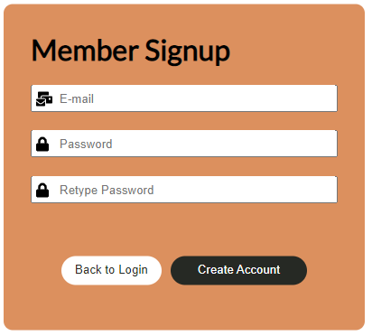File Upload¶
After the user logged-in, only the Upload option of the File menu appears, so as the user to upload an event log in xes or csv format.
The user can choose or drag n drop a file (event log) in xes or csv format and then press complete button.
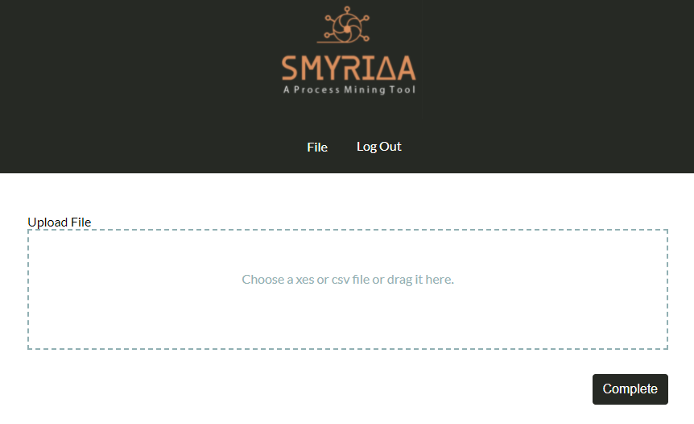After at least one file is uploaded all other options of menu are appeared. The user must select a file by clicking the file name in order to be able to continue with the rest of the software functionalities.
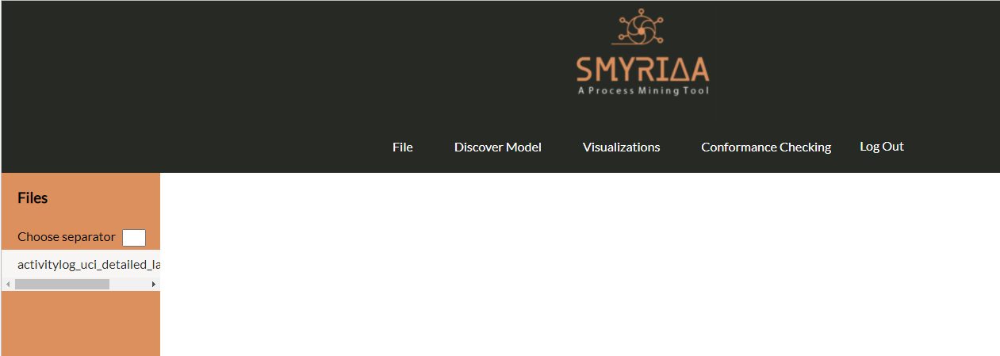Convert to xes¶
If the uploaded file was a csv file, the user can convert it to xes format. From the file menu File choose Convert to xes.
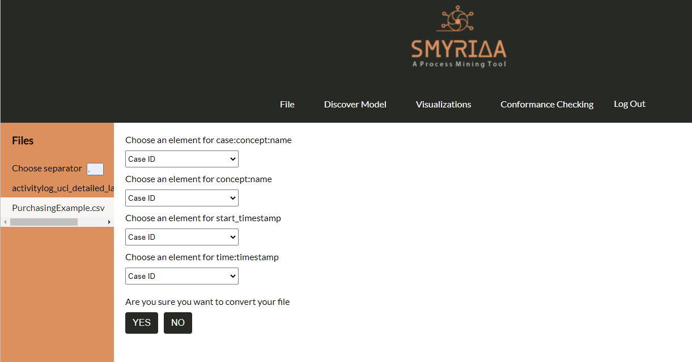In order to convert a csv file to xes format the following parameters must be set from a dropdown list:
case:concept:name - The field in the csv file that represents the trace id on the event log
concept:name - The field in the csv file that represents the activity on the event log
start_timestamp - The field in the csv file that represents the start time of the activity on the event log if exists
time:timestamp - The field in the csv file that represents the complete time of the activity on the event log
Then the user must press the “YES” button and a file with the same file name appears in the side column with files with .csv.
Convert to csv¶
If the uploaded file was a xes file, the user can convert it to csv format. From the file menu File choose Convert to csv.
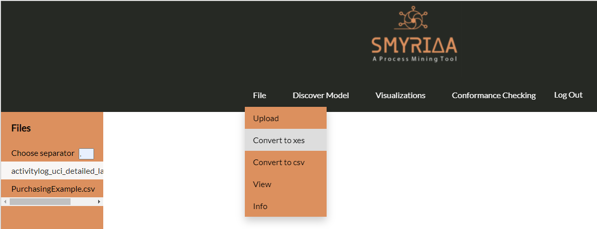Then the user must press the “YES” button.
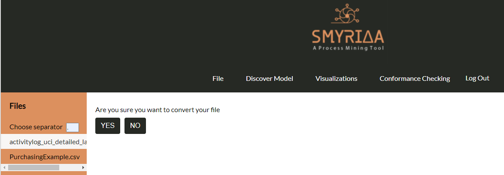View¶
The user can select an event log and see a part of it as a table in order to see the fields of data and their values. From the file menu File choose View.
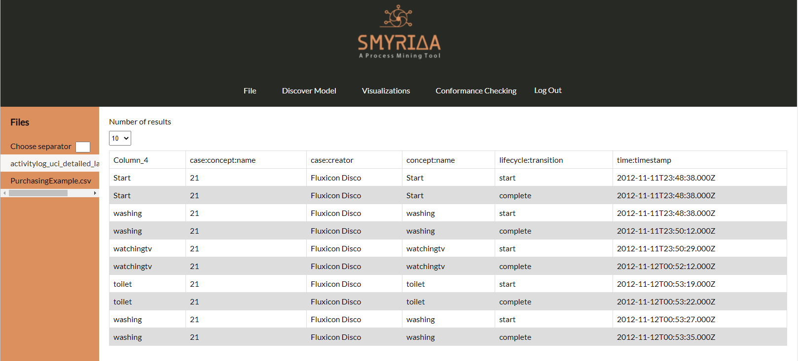In the presented dataset (activitylog_uci_detailed_labour.xes) the event log consist of 6 attributes (presented as columns):
Column_4: (copy of concept:name)
case:concept:name: The trace id of the event log
case:creator: The creator of the event
lifecycle:transition: The activity state - if it is a start or end event
time:timestamp: The time the activity was completed
So the user can understand the structure of the file and the type of values it contains.
Info¶
The user can select an event log and see the following information of the event log. From the file menu File choose Info.
The number of traces
The number of events
The frequency of each event
The starting events of traces
The ending events of traces
The variants (unique traces - unique sequences of events that appears in the event log as process runs) of the event log
Discover Model¶
The user can discover a process model using on of the algorithms Alpha Miner, Heuristics Miner or Inductive Miner. The produced process model can be zoomed in or out and the places and activities of the produced petri-net are all dragable. For each model evaluation metrics are presented: Log Fitness, Log Precision, Generalization and Simplicity.
Alpha Miner¶
From the file menu Discover Model choose Alpha Miner.
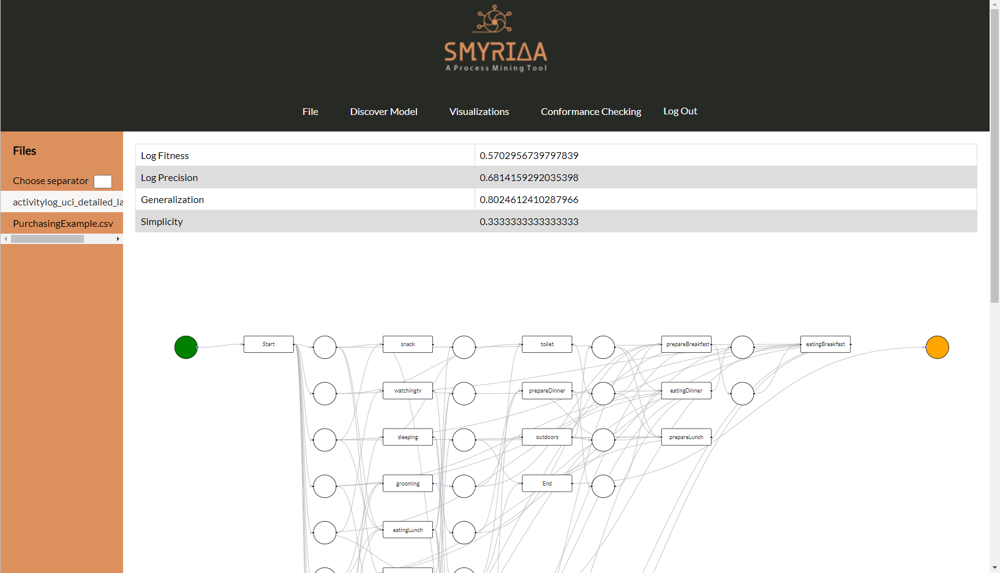Heuristics Miner¶
From the file menu Discover Model choose Heuristics Miner.
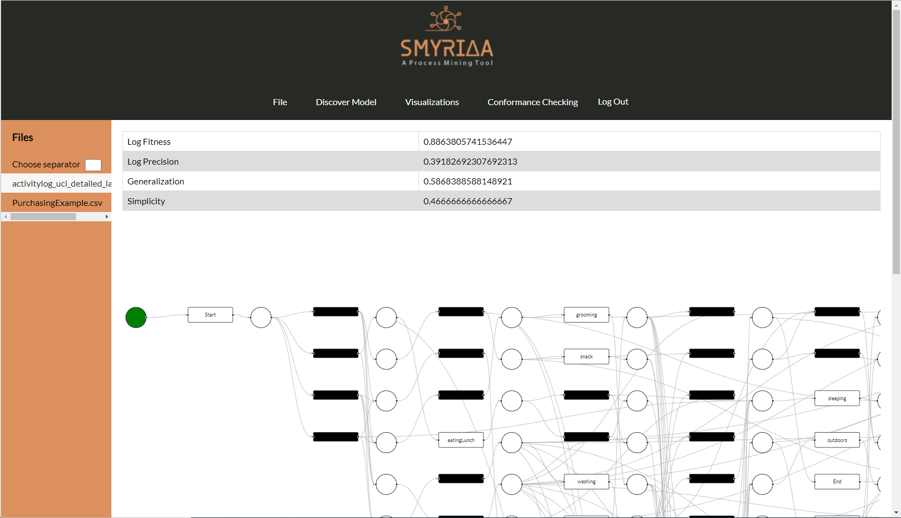Inductive Miner¶
From the file menu Discover Model choose Inductive Miner.
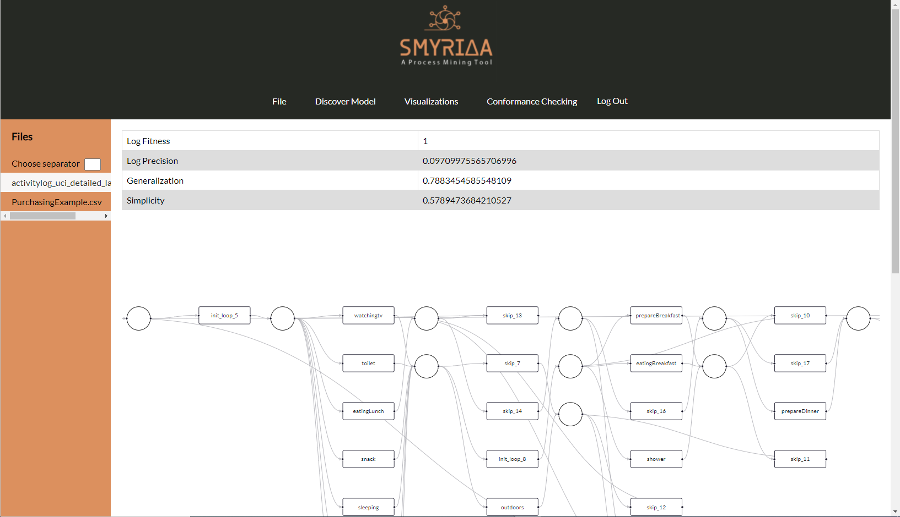Conformance Checking¶
In conformance checking the user must provide an event log and a petrinet to see how much the event log conforms with petrinet. The user must select a file from the list and an algorithm to discover a process model from the drop down list.
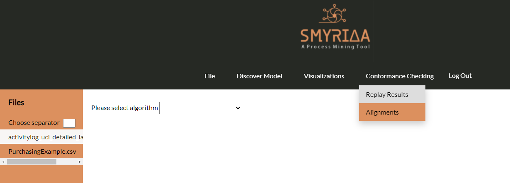Replay Results¶
By selecting from menu Conformance Checking the Replay Results option, the user will see a table wit the following columns:
Trace is fit: True if the trace of the event log fits in process model, else False
Trace fitness: The fitness metric of the trace (0-1)
Activated Transitions: The transitions on the process model that were activated as the trace of the log was replayed in the model
Reached Marking: The end marking that was reached after the end of the replay of the event log trace
Missing tokens: The number of missing tokens
Consumed tokens: The number of consumed tokens
Remaining tokens: The number of remaining tokens
Produced tokens: The number of produced tokens
Aligments¶
Alignments technique presents the best alignment between the trace and the model. For each trace, the output of an alignment is a list of couples where the first element is an event (of the trace) or » and the second element is a transition (of the model) or ». For each couple, the following classification could be provided:
Sync move: the classification of the event corresponds to the transition label; in this case, both the trace and the model advance in the same way during the replay. Move on log: for couples where the second element is », it corresponds to a replay move in the trace that is not mimicked in the model. This kind of move is unfit and signal a deviation between the trace and the model. Move on model: for couples where the first element is », it corresponds to a replay move in the model that is not mimicked in the trace. For moves on model, we can have the following distinction: Moves on model involving hidden transitions: in this case, even if it is not a sync move, the move is fit. Moves on model not involving hidden transitions: in this case, the move is unfit and signals a deviation between the trace and the model. First, we have to import the log. Subsequently, we apply the Inductive Miner on the imported log. In addition, we compute the alignments.
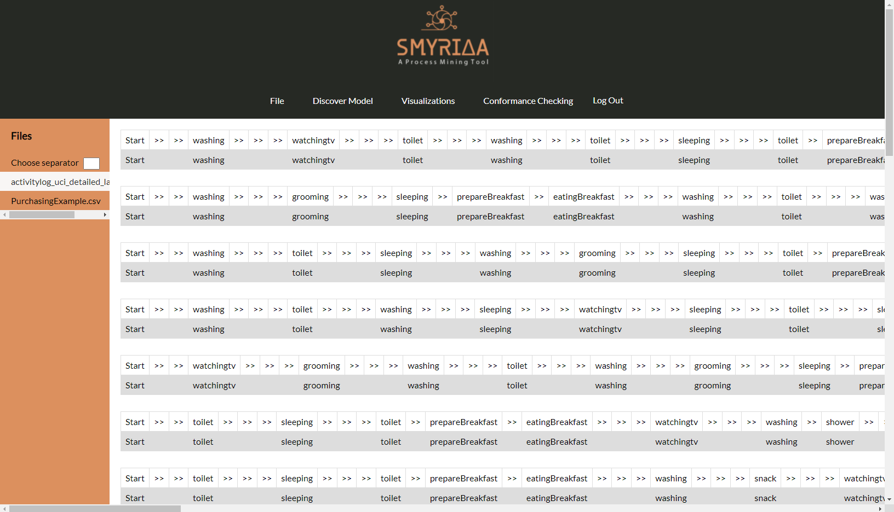Visualization¶
The user can see many visualizations to better understand the event log, the process and deviations or anomalies so as to improve the process.
In order to understand which are the activities of the process and their frequency, the user can choose Activities Frequency from menu Visualizations. From the image below we can see that the event log contains 16 activities and the most frequent activities are toilet, washing and watching tv.
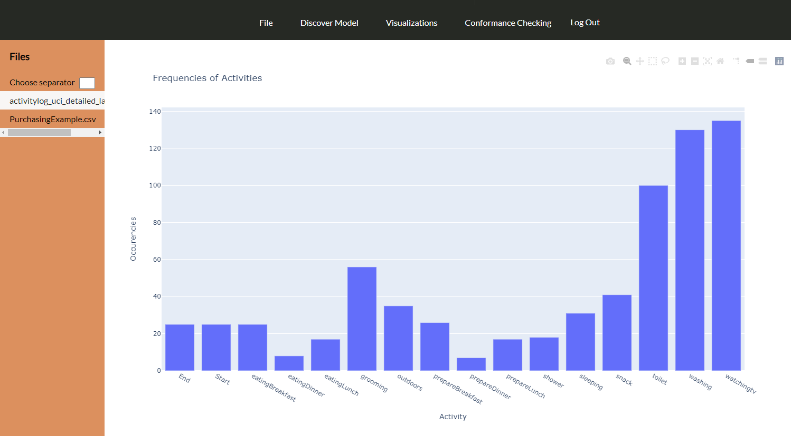In order to understand the duration of the process activities, the user can choose Activities Duration from menu Visualizations. From the image below we can see that the event log contains 16 activities and the most long lasting activities are outdoors, prepare dinner and watching tv.
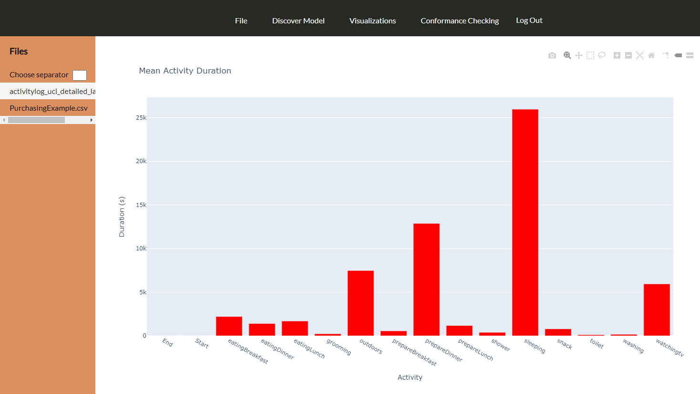If the user wants to see not only the long lasting activities but also their frequency, the user can choose Activities Frequency & Duration from menu Visualizations. From the image below we can see that watching tv is the most long lasting and most frequent activity.
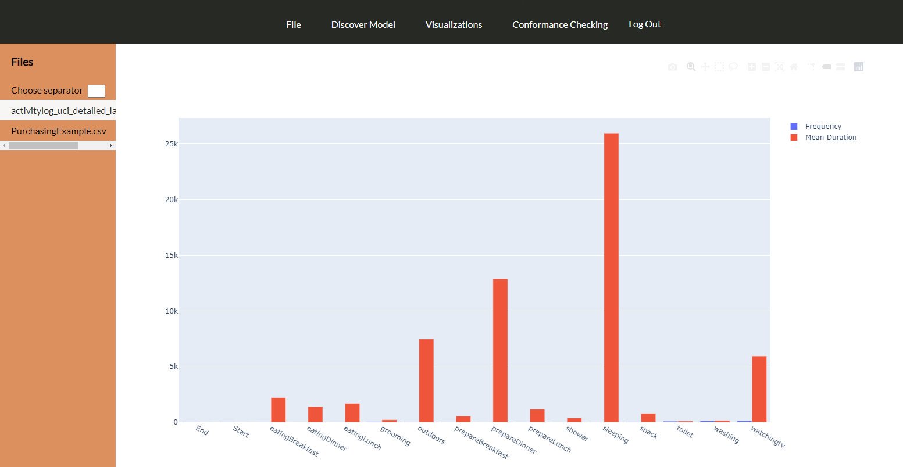Many other visualizations can help user to better understand the process, in order to make better desicions and optimize the real process. In the images below we can see the events and traces over time, the duration of the events and the traces and the variants of the traces.
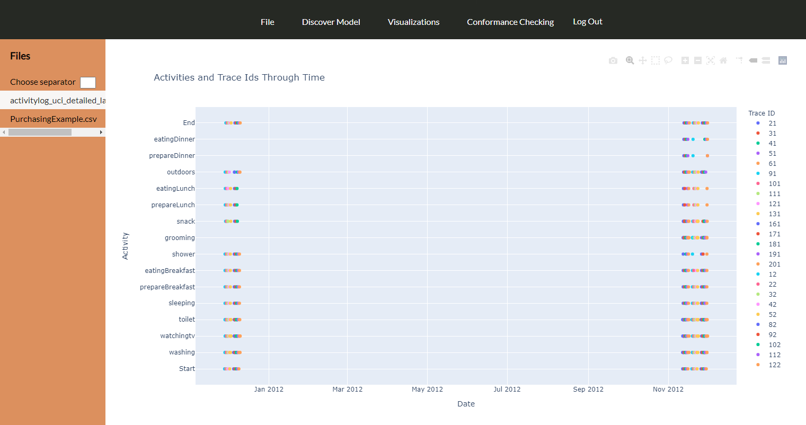 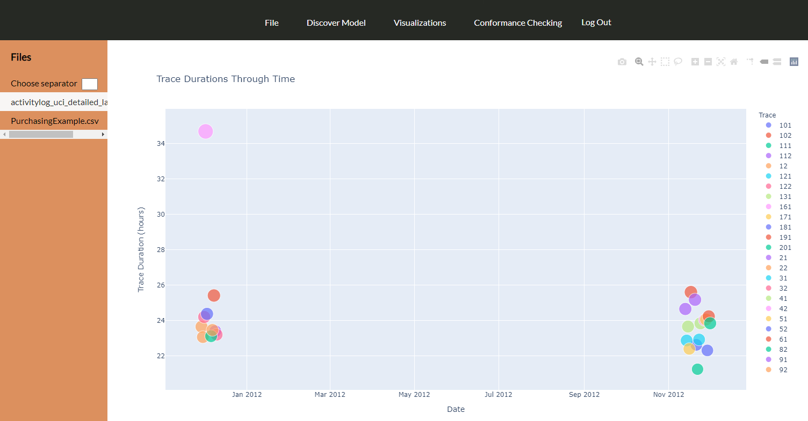 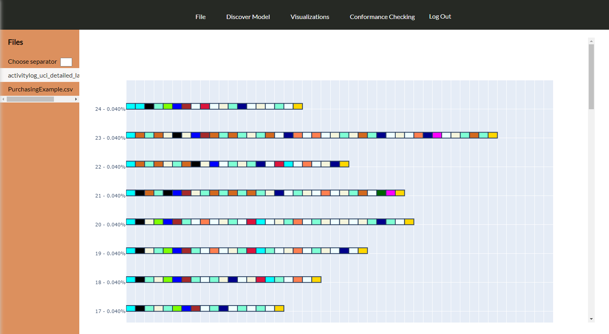 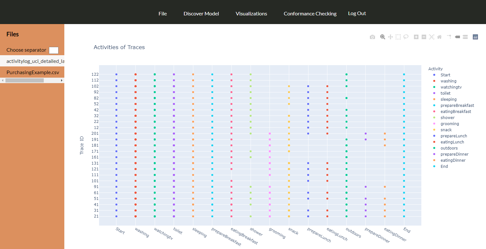{kind=link}
{kind=link}
{kind=link}
{kind=link}